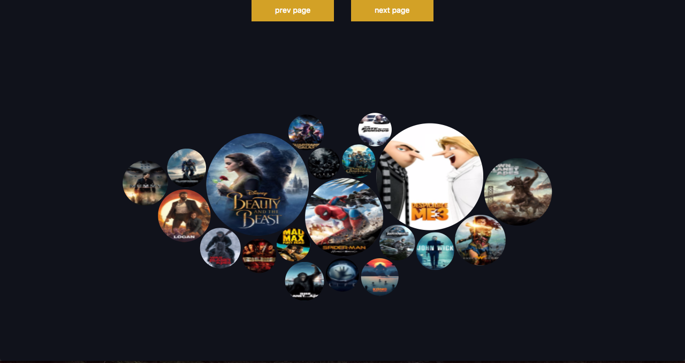
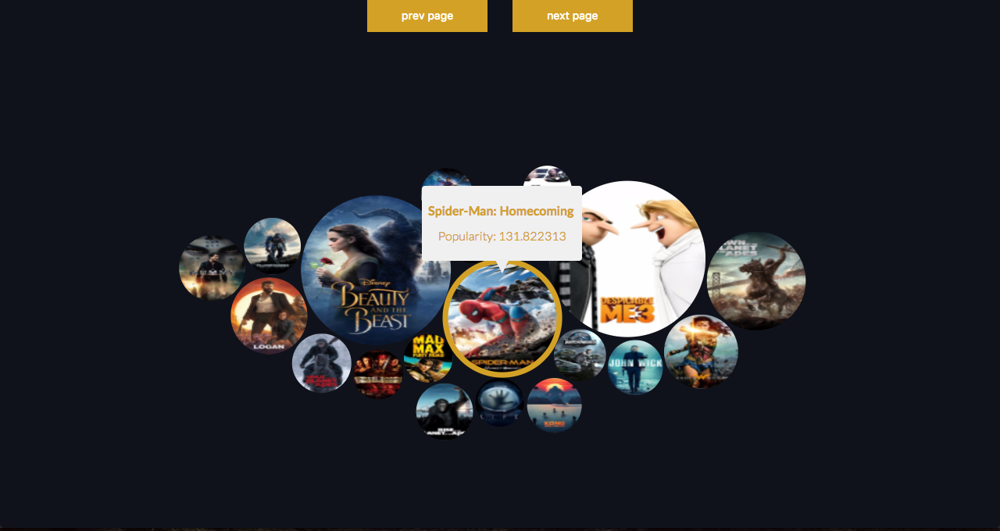

We've all been there, it's the weekend and you don't know what to go see, watch on Netflix or rent (yeah some people still rent movies)... until now.
Movie graph is the app you need to help you decide what to do, using MovieDB and the power of D3 js to visualize data, will display 20 popular movies and their popularity will be represented by circles, the bigger the circle the more popular. Hover on top of them to see their popularity score.
None of the movies on the screen call your attention? hit next to get the next 20 popular movies.
Isn't that enough? Then click on any of the bubbles to get more detailed information like its length, the rating from 1 to 10, and finally watch a trailer.
Enough words, YOU want action! click on the get me there button to start using the application.
Take me there
How it works

